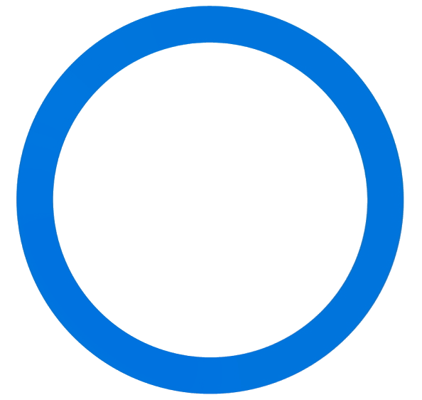

Hemant Surale, PhD
Research Scientist at  Meta Reality Labs

Hemant is a Human-Computer Interaction Researcher in Canada. His main research interests include Mixed Reality Interfaces (MR), Wearable Computing, Input Interactions (Gestural interfaces), and Applied Machine Learning (Computer Vision).
He holds a Ph.D. in Computer Science from the University of Waterloo, Canada, where he was advised by Daniel Vogel, Mark Hancock, and Edward Lank. Throughout his academic journey, Hemant has been honored with the David R. Cheriton Graduate Scholarship thrice and Snap Research Fellowship, alongside recognition through awards such as IDSA and CS Achievement Award.
The focus of his research is on improving productivity through the design, development, and evaluation of user interfaces. He focuses on fundamental concepts such as modes and mode-switching to establish practical design principles applicable across diverse applications.
With a rich professional history across top research organizations and industry leaders, he has been instrumental in driving impactful projects at Microsoft Research, Snap Research, North Research, and NetApp Research. Additionally, he co-founded IoTBLR (Internet of Things, Bangalore), highlighting his entrepreneurial spirit and commitment to innovation.
news
| Jan 26, 2024 |
Our intern Junxiao (Shawn) is off to start an assistant professor position at the University of Bristol, UK. Congrats!! |
|---|---|
| Jun 26, 2023 | Our intern Taejun presented the STAR paper at UIST’23. |
| Jun 26, 2023 | Our paper on text-entry method for AR (STAR) is conditionally accepted at UIST’23. |
| Mar 13, 2023 |
Our paper on gaze-based mode-switching was accepted at ETRA’23. |
selected publications
-
 STAR: Smartphone-analogous Typing in Augmented RealityIn Proceedings of the 36th Annual ACM Symposium on User Interface Software and Technology, 2023
STAR: Smartphone-analogous Typing in Augmented RealityIn Proceedings of the 36th Annual ACM Symposium on User Interface Software and Technology, 2023 -
 Gaze-based Mode-Switching to Enhance Interaction with Menus on TabletsIn Proceedings of the 2023 Symposium on Eye Tracking Research and Applications, 2023
Gaze-based Mode-Switching to Enhance Interaction with Menus on TabletsIn Proceedings of the 2023 Symposium on Eye Tracking Research and Applications, 2023